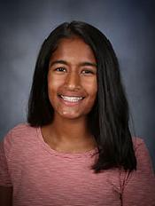

I am Anika Surapaneni and I am a fourteen year old freshman at Dublin High School. I live with my mother, father, and brother (who is currently in college). I enjoy working on projects, being outdoors, swimming, baking, and travelling. Throughout my life I have always enjoyed using technology, problem solving, and helping others. I love learning new things and by the end of the day, my main objective is to acquire new skills. In college, I would like to have a double major in Business and Computer Science, later working in the field of Media Marketing.